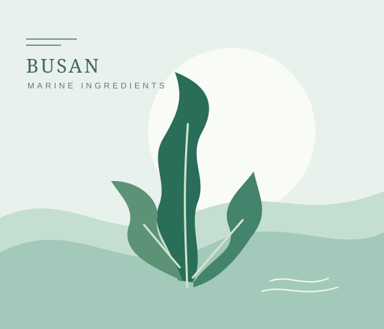

다양한 부산 해양원료
기장 미역·다시마 등 해조류를 포함한 해양원료 후보를 탐색합니다. 특정 원료에 한정하지 않고 공급 가능성·안전성·제형 적합성을 살펴 지역 생산자·원료 기업과의 연계를 추진합니다.
카메라로 촬영하고, 16가지 피부 항목을 확인하세요.
내 피부 고민에 맞는 제품 유형과 성분까지 추천해 드려요.
부산 바다에서 찾은 영감에,
내 피부를 이해하는 경험을 더합니다.

Marine Ingredients스킨틸라는 부산 해양원료를 바탕으로
피부 고민에 맞춘 기능성 스킨케어를 개발합니다.
지역 원료의 이야기가 제품의 제형과 사용 경험으로 이어지도록. 미역·다시마 등 다양한 해양원료 후보를 검토하고, 원료별 적합성을 확인해 제품으로 구체화합니다.
지역의 자원을 제품으로, 제품을 나에게 맞는 경험으로 연결합니다.
기장 미역·다시마 등 해조류를 포함한 해양원료 후보를 탐색합니다. 특정 원료에 한정하지 않고 공급 가능성·안전성·제형 적합성을 살펴 지역 생산자·원료 기업과의 연계를 추진합니다.
피부 고민에 맞춘 세럼·크림 등 기능성 중심 제품을 우선 개발합니다. 원료·제형·사용감 검증을 거쳐 향후 두피 관리 제품까지 확장할 계획입니다.
사진 기반 참고 분석으로 피부 고민을 살펴보고, 나에게 맞는 제품 유형과 성분을 알아보세요. 제품 개발 후 추천 경험과 연결할 계획입니다.
내 피부 살펴보기기장 미역은 여러 해양원료 후보 중 하나입니다. 해양원료 적용과 제품 개발은 추진 단계입니다. 현재 추천은 일반적인 제품 유형·성분 안내이며, 출시 제품이나 효능 검증 결과를 의미하지 않습니다.
조명·정면 보기·얼굴 위치가 실시간으로 표시돼요. 세 조건이 OK 이상이면 촬영할 수 있어요.
촬영 전 세 가지만 확인해 주세요.
세 항목 모두 Good이면 3초 뒤 자동 촬영해요.
사진은 서버로 전송하거나 저장하지 않아요.
카메라를 준비하고 있어요
카메라 연결 중…
사진은 현재 기기에서만 분석됩니다.
사진에 나타난 특징으로 계산한 실험적 참고 지수입니다.
AI 얼굴 모델로 눈·볼·이마를 찾고, 부위별 밝기·붉은 색 비율·국소 대비·윤곽을 계산합니다. 피부 상태를 학습한 전문 진단 모델은 아닙니다. 정확도는 검증되지 않았으며 조명·카메라·피부 톤·표정의 영향을 받습니다.
수분·유분·탄력·눈꺼풀·눈 밑 지방은 사진상 광택, 결, 명암, 윤곽을 이용한 간접 추정입니다. 실제 수분량·피지량·탄력·안검하수·지방량을 측정하지 못합니다. 각 항목의 산출 기준을 확인해 주세요.
촬영을 마치면 피부 고민에 맞는 제품 유형과 성분을 추천해 드려요.
관리가 필요한 항목을 골라
제품 유형·성분과 사용 순서를 안내해요.
특정 브랜드·구매 링크 없이 제품 유형과 성분을 안내합니다. 실제 피부 반응과 평소 느끼는 상태를 함께 확인해 주세요. 보습제 선택 가이드 · 자외선 차단 가이드
카메라를 켜고 정면 얼굴을 촬영하세요.
16가지 피부 항목과 참고 지수를 살펴보세요.
피부 고민에 맞는 제품과 사용 순서를 알아보세요.
네. AI가 얼굴 부위를 찾고, 영상 처리로 색·결·광택·윤곽을 계산합니다. 고정된 예시나 무작위 점수를 사용하지 않습니다. 전문 피부 분석용으로 검증된 엔진은 아니며 결과는 실험적 참고용입니다.
아니요. AI 모델과 계산은 브라우저 안에서 실행됩니다. 사진과 분석 결과를 서버에 전송·저장하지 않습니다. 다시 촬영하거나 새로고침하면 이전 사진과 결과가 초기화됩니다.
모공·피부결·여드름·유분·주름·수분·눈 밑 지방·눈물 고랑·탄력·위/아래 눈꺼풀·잡티·다크서클·광채·피부 타입·붉은기를 다룹니다. 실제 측정값이 아니라 사진 특징으로 만든 지수이며 결과 카드마다 산출 기준을 설명합니다.
브라우저에서 카메라 권한을 허용하고, 카메라를 사용하는 다른 앱을 닫은 뒤 다시 시도해 주세요. 카메라가 없는 기기에서는 촬영할 수 없습니다. HTTPS 보안 연결이 필요합니다.
우선 관리 항목에 맞춰 클렌저, 보습제, 세럼, 선크림 등의 제품 유형과 성분을 안내합니다. 제품으로 해결할 수 없는 구조적 변화에 대한 개선 효과를 약속하지 않습니다.
실험적 사진 분석 서비스입니다. 정확도가 검증되지 않았으며 의학적 진단이나 실제 수분·피지 측정을 제공하지 않습니다.